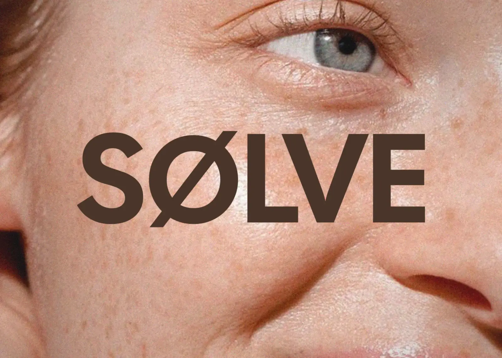

SØLVE — Skincare Branding & Packaging Design
SØLVE is a premium skincare brand built on clarity, simplicity and conscious care. The brand focuses on essential formulas and a minimal approach to both product and design.
Inspired by Scandinavian aesthetics, SØLVE avoids visual noise and unnecessary complexity. Its identity uses a muted skin-tone palette, soft typography and spacious compositions to create a calm, refined skincare experience.
Care, simplified.